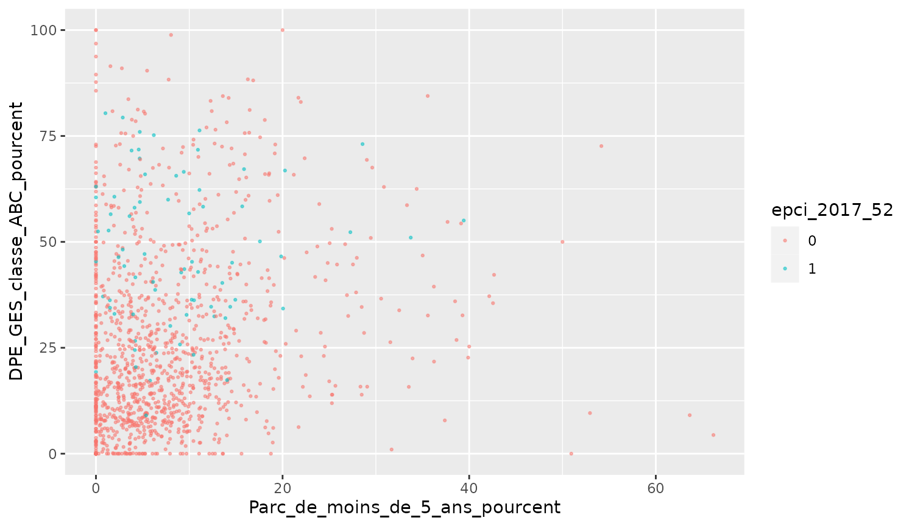
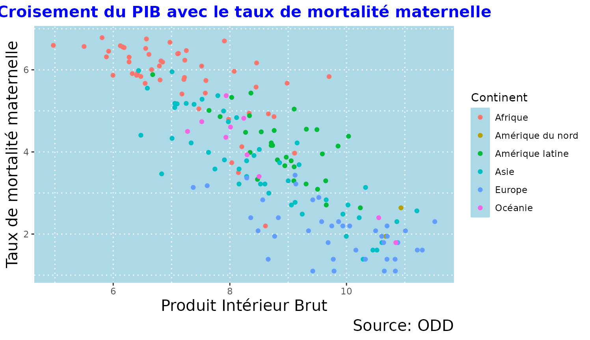
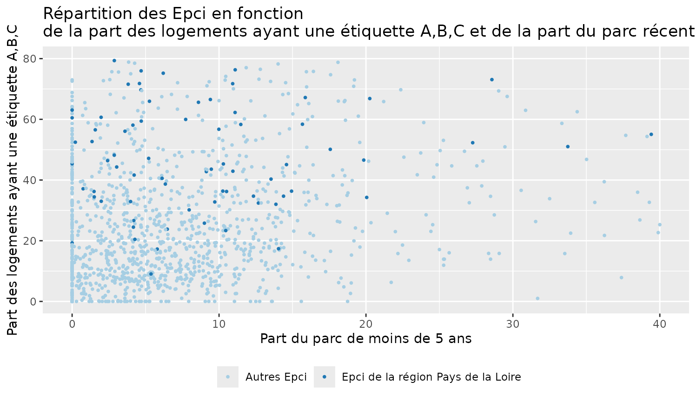
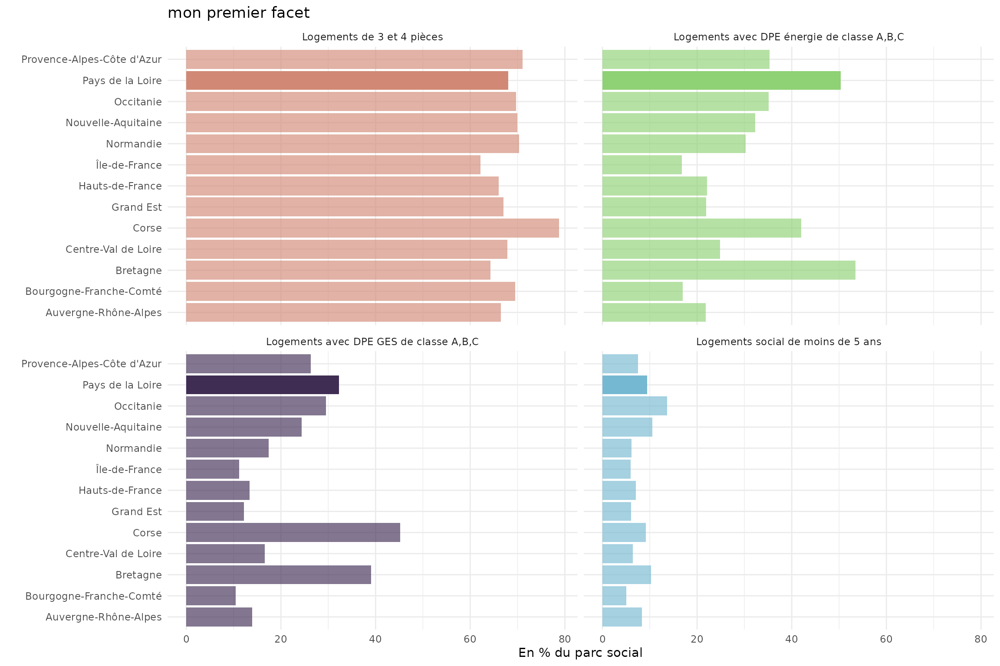
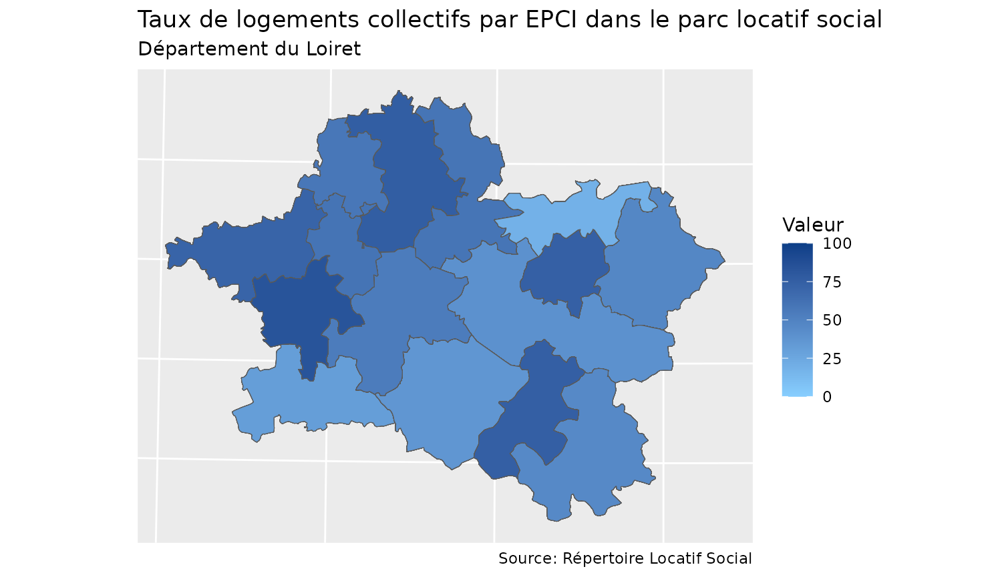
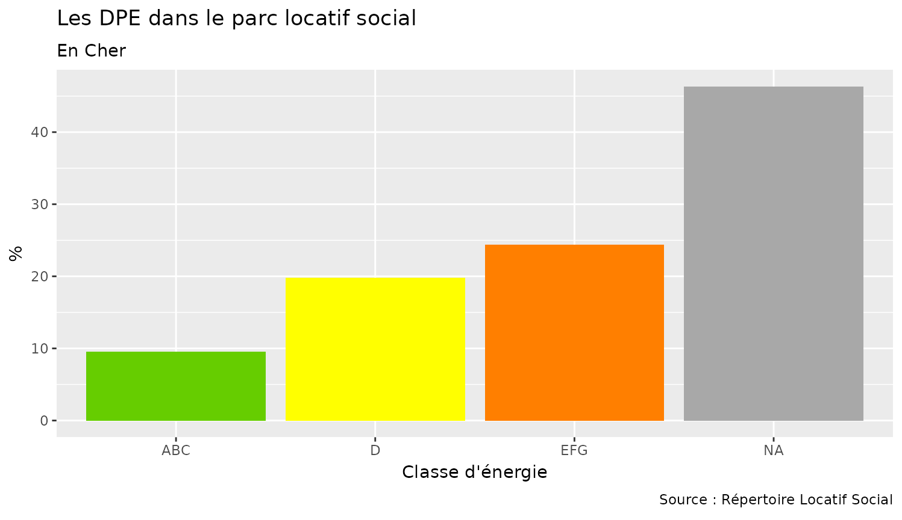

vignettes/m05_exercices_module_datavisualisation_R.Rmd
m05_exercices_module_datavisualisation_R.RmdA partir des données de la table rpls_aggrege_large
(rpls_aggrege_large.RData), créer un nuage de point (un point par EPCI)
entre : :
Parc_de_moins_de_5_ans_pourcent) ;DPE_GES_classe_ABC_pourcent)
;epci_2017_52 vaut 1 si l’EPCI
appartient à la région PDL, 0 sinon).Résultat attendu :

A partir des données de la table ODD_graphique1 (ODD.RData),
reprendre le nuage de point obtenu à partir des données ODD : taux de
mortalité maternelle (Maternal_mortality_ratio) en fonction
du produit intérieur brut (Gross_Domestic_Product_GDP)
(Chapitre 5.1) En modifier le thème : - insérer un titre de couleur, en
gras, centré par rapport au graphe, - indiquer la source (ODD) et
modifier sa taille, - changer les titres des axes et leurs tailles, -
modifier la couleur de fond du graphe, - modifier le type de quadrillage
(pointillés).
Résultat attendu :

En réutilisant le graphe obtenu à l’exercice 1 (rpls_aggrege_large.RData), y rajouter : - une palette gouvdown pour la couleur ; - la légende en bas ; - des libellés (axes et légende) parlant et un titre.
Résultat attendu :

A partir de la table rpls_aggrege, réaliser une facette sur un
diagramme barre avec :
- en variable discrète les régions (axe des x),
- en variables continues les indicateurs suivants (axe des y, les
facettes) :
- % de logements de 3 et 4 pièces
- % DPE énergie A, B, C
- % DPE GES A, B, C
- % de parc de moins de 5 ans
- une façon d’identifier la région Pays de la Loire.
Résultat attendu :

A partir des jeux de données rpls_aggrege.RData et Carte_EPCI_France.RData, produire une carte du Loiret à l’EPCI représentant le taux de logements collectifs dans le parc locatif social (variable “Logements collectifs_pourcent”).
Résultat attendu :

A partir du fichier rpls_aggrege_large.RData, réaliser
un graphique en barre représentant la répartition des DPE par classe (en
%). Le graphique sera animé par département, uniquement pour ceux de la
région Centre-Val de Loire.
Résultat attendu :

Reprendre le nuage de point obtenu à partir des données ODD : taux de
mortalité maternelle (Maternal_mortality_ratio) en fonction
du produit intérieur brut (Gross_Domestic_Product_GDP)
(Chapitre 9)
Obtenir ce graphique pour le web avec des infos bulles regroupant le
nom du continent, de la zone, le PIB et le taux de mortalité
maternelle.
Paramétrer la surbrillance du continent au survol d’élément.
Résultat attendu :
A partir de la table rpls_aggrege_large, produire un
tableau du nombre de logements collectifs et individuels (RPLS) par
départements en région Centre-Val de Loire : 1 ligne par département + 1
ligne avec le total de la région.
Résultat attendu :
| Zone | Nombre de logements collectifs | Nombre de logements individuels |
|---|---|---|
| Cher | 14434 | 7054 |
| Eure-et-Loir | 24462 | 7024 |
| Indre | 11533 | 6419 |
| Indre-et-Loire | 39030 | 9779 |
| Loir-et-Cher | 14632 | 6436 |
| Loiret | 37442 | 12671 |
| Centre-Val de Loire | 141533 | 49383 |